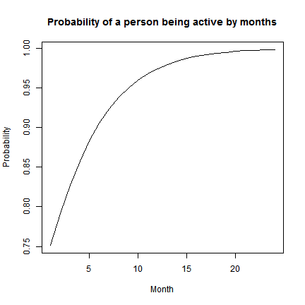

Churn Prediction Brief

Martin Hou
Data Specialist
Categorical Data
Numeric Data
Constituent_ID Age Gender Income Assigned_Fundraiser Sign_Up_Amount Frequency Current_Status Status.Indicator First_Gift_Amount Last_Gift_Amount Saved Duration Upgrade Total_Number_Of_Gifts Total_Gift_Amount DDD CCC Times DDDown
1 108859 68 Female 45000 Telefundraiser 35 MONTHLY GIVING Active 1 25 35 0 10 1 61 1145 0 0 2 0
2 121705 84 Female 0 Canvasser 25 MONTHLY GIVING Terminated 0 25 25 0 1 0 2 50 0 0 1 0
3 123157 59 Male 0 Telefundraiser 30 MONTHLY GIVING Terminated 0 30 30 0 10 0 198 2745 0 0 2 0
4 16717 83 Female 75000 Canvasser 25 MONTHLY GIVING Active 1 0 0 0 16 0 0 0 0 1 1 0
5 17349 0 Female 80700 Telefundraiser 50 MONTHLY GIVING Active 1 50 50 0 10 0 22 950 0 0 2 0
6 28989 0 Female 51700 Telefundraiser 26 MONTHLY GIVING Active 1 26 26 0 11 0 24 617 0 0 2 0
Current_Status, Gender, Assigned_Fundraiser and all other categorical variables should be changed into numbersActive, Terminated will become 1, 0Female, Male, Unknown will become 1, 2, 3Telefundraiser, Canvasser, Frontliner, WEB, Saver will become 1, 2, 3, 4, 5
options(width=300)
round(cor(df[,c("Income", "Age", "Sign_Up_Amount",
"First_Gift_Amount", "Last_Gift_Amount",
"Total_Number_Of_Gifts", "Total_Gift_Amount", "Times")]),2)
Income Age Sign_Up_Amount First_Gift_Amount Last_Gift_Amount Total_Number_Of_Gifts Total_Gift_Amount Times
Income 1.00 -0.01 0.03 0.07 0.06 0.06 0.09 -0.01
Age -0.01 1.00 0.02 -0.01 0.01 0.09 0.09 0.11
Sign_Up_Amount 0.03 0.02 1.00 0.55 0.70 0.03 0.28 0.07
First_Gift_Amount 0.07 -0.01 0.55 1.00 0.88 0.11 0.27 0.03
Last_Gift_Amount 0.06 0.01 0.70 0.88 1.00 0.11 0.36 0.05
Total_Number_Of_Gifts 0.06 0.09 0.03 0.11 0.11 1.00 0.79 0.53
Total_Gift_Amount 0.09 0.09 0.28 0.27 0.36 0.79 1.00 0.45
Times -0.01 0.11 0.07 0.03 0.05 0.53 0.45 1.00
VIF)options(width=300)
vif <- diag(solve(cor(df[,c("Income", "Age", "Sign_Up_Amount",
"First_Gift_Amount", "Last_Gift_Amount",
"Total_Number_Of_Gifts", "Total_Gift_Amount", "Times")])))
vif
Income Age Sign_Up_Amount First_Gift_Amount Last_Gift_Amount Total_Number_Of_Gifts Total_Gift_Amount Times
1.013195 1.015675 2.091509 4.798189 6.827333 3.353585 3.513616 1.416261
Last_Gift_Amount first
Logistic regression is part of Generalized Linear Model (GLM) family
The syntax of a logistic regression will be like the script below
my_model <- glm(Status.Indicator ~ Age + Gender + Income + Assigned_Fundraier + ...,
data = df,
family = binomial(logit))
my_model <- glm(Status.Indicator ~ Age
+ Gender
+ Income
+ Assigned_Fundraiser
+ Sign_Up_Amount
+ Frequency
#+ First_Gift_Amount
#+ Last_Gift_Amount
#+ Saved
#+ Upgrade
#+ Total_Number_Of_Gifts
+ Total_Gift_Amount
+ Duration
+ DDD
+ CCC
+ Times
#+ DDDown
,
data = df,
family = binomial(logit)
)
Call:
glm(formula = Status.Indicator ~ Age + Gender + Income + Assigned_Fundraiser +
Sign_Up_Amount + Frequency + Total_Gift_Amount + Duration +
DDD + CCC + Times, family = binomial(logit), data = df)
Deviance Residuals:
Min 1Q Median 3Q Max
-8.4904 -0.7957 0.2675 0.8649 3.6148
Coefficients:
Estimate Std. Error z value Pr(>|z|)
(Intercept) 8.759e+00 9.054e-01 9.674 < 2e-16 ***
Age 4.190e-03 1.287e-03 3.256 0.00113 **
GenderMale 1.143e-01 5.284e-02 2.163 0.03057 *
GenderUnknown 3.150e-02 7.283e-02 0.433 0.66537
Income -4.999e-06 9.270e-07 -5.393 6.93e-08 ***
Assigned_FundraiserCanvasser -1.317e+00 8.828e-02 -14.921 < 2e-16 ***
Assigned_FundraiserFrontliner -2.242e+00 2.355e-01 -9.519 < 2e-16 ***
Assigned_FundraiserSaver -1.365e+00 1.091e-01 -12.511 < 2e-16 ***
Assigned_FundraiserTelefundraiser -7.964e-01 9.153e-02 -8.701 < 2e-16 ***
Assigned_FundraiserWEB -9.677e-02 2.212e-01 -0.437 0.66175
Sign_Up_Amount -3.232e-02 2.020e-03 -16.001 < 2e-16 ***
FrequencyMONTHLY GIVING -7.543e+00 8.682e-01 -8.688 < 2e-16 ***
Total_Gift_Amount 3.642e-03 1.685e-04 21.616 < 2e-16 ***
Duration 2.302e-01 7.908e-03 29.108 < 2e-16 ***
DDD1 -1.081e+00 1.052e-01 -10.277 < 2e-16 ***
CCC1 -2.144e-01 9.645e-02 -2.223 0.02621 *
Times -5.976e-01 8.347e-02 -7.159 8.13e-13 ***
---
Signif. codes: 0 '***' 0.001 '**' 0.01 '*' 0.05 '.' 0.1 ' ' 1
(Dispersion parameter for binomial family taken to be 1)
Null deviance: 13916 on 10071 degrees of freedom
Residual deviance: 10460 on 10055 degrees of freedom
AIC: 10494
Number of Fisher Scoring iterations: 6
\[\pi = \frac{exp(\beta_0 + \beta_1V_1 + \beta_2V_2 + ...)}{1 + exp(\beta_0 + \beta_1V_1 + \beta_2V_2 + ...)}\]
predict() functionprob <- predict(my_model, df, type = "response")
df should contain the exact variables used in the modelpredict() to calculate the probability of the response variable for a given dataset, type="response" should be specifieddf.test <- data.frame(Age = 27,
Gender = as.factor("Female"),
Income = 30800,
Assigned_Fundraiser = as.factor("Agency FR"),
Frequency = as.factor("MONTHLY GIVING"),
Duration = c(1:24),
Sign_Up_Amount = 10,
Total_Gift_Amount = 171,
DDD = as.factor(0),
CCC = as.factor(0),
Times=1)
prob.test <- predict(my_model, df.test, type = "response")
plot(prob.test, type = "l",
main = "Probability of a person being active by months",
ylab = "Probability",
xlab = "Month")
